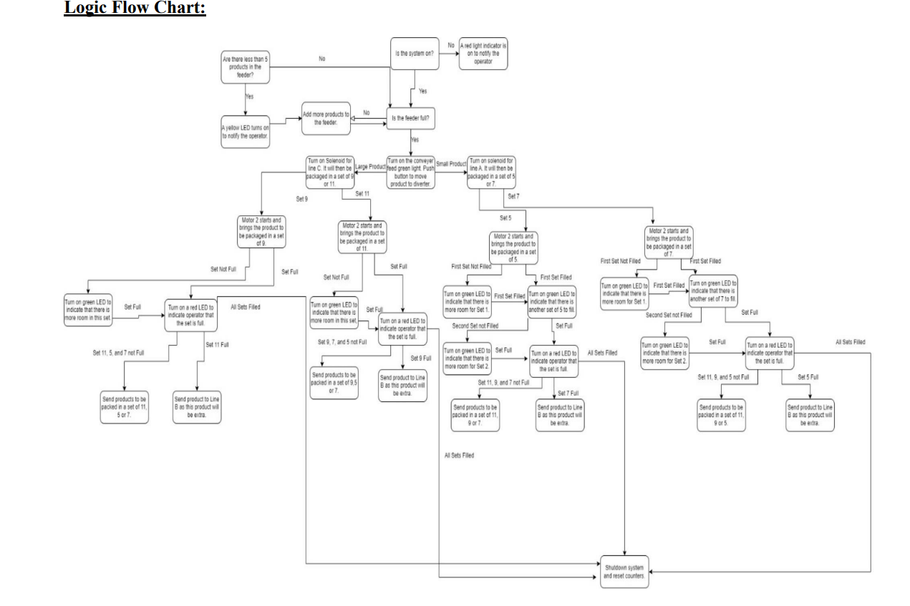

PLC Conveyor Sorter System (simulation)

Click any of the following to learn more:
OBJECTIVE:
PROCESS:
RESULT:
FLOWCHART:
CODE:
REPORT:
- Simulate a conveyor-based bottle sorting and packaging system using a PLC. A small motor was used to represent the conveyor, while real input/output components such as buttons, switches, and indicator lights were physically implemented.
- Sort products into Line A or Line C based on size, using selector switches and push buttons.
- Pack products into sets of 5, 7, 9, or 11, depending on operator input.
- Indicate process completion with a red pilot light once all four set types are filled.
- Use a reset button to clear all counters and restart the process.
- System Environment
- Designed for use in a simulated indoor packaging center to replicate the sorting and packing of bottles.
- Operator manually interacts with buttons and switches to control sorting and packaging logic.
- System Logic
- Fill the feeder with up to 20 products (simulated).
- Press a green button to move the product from feeder to conveyor (motor used to simulate movement).
- Select the product’s destination (Line A or C) using selector switches.
- Choose a packaging set size of 5, 7, 9, or 11.
- System tracks set completion and lights a red indicator once all are filled.
- Reset button clears all counters and restarts the operation.
- Safety Features
- Two E-stop buttons shut down the system and require manual reset to resume operation.
- Seal-in logic prevents the motor from restarting automatically after a power outage.
- Operator is blocked from feeding products while the simulated conveyor motor is active.
- PLC Hardware
- PLC: Allen Bradley Compact GuardLogix 5380 (5069-L306ERMS2).
- Input Module: 5069-IB16F, 16-point.
- Output Module: 5069-OB16, 16-point.
- Input Devices
- White push button
- Green push button
- Red push button
- Blue push button
- Yellow push button
- Two E-stops
- Three selector switches (black, blue, green)
- Output Devices
- DC motor (used to simulate conveyor movement)
- Red indicator lights
- Yellow indicator lights
- Green indicator lights
- LED tower light
- Startup Configuration
- Feeder is assumed empty at startup.
- All counters start at zero.
- Operator is expected to fill the feeder before beginning the simulation cycle.
- Failure and Safety Handling
- System does not detect human presence; relies on E-stop buttons for safety.
- Only two E-stops may be insufficient for large conveyor setups.
- System is not enclosed, which presents a simulated hazard scenario.
- Seal-in logic ensures motors remain off after power is restored unless manually reset.
- System requires full reset after emergency stops or power failure.
- If the wrong line is selected or feeder is empty, system prevents motor start and halts operation.
- Created a PLC-based simulation that replicates a real-world sorting and packaging process.
- Used actual buttons, selector switches, motors, and indicator lights to represent operational flow.
- Implemented functional safety interlocks including E-stops and seal-in logic.
- Practiced modular PLC programming and safety-focused system design.
- Gained hands-on experience translating logical flowcharts into functional control systems using simulation.
-

Figure 1: Flowchart of PLC Conveyor System
-
Figure 1: Lines 0-4
-
Figure 2: Lines 5-7
-
Figure 3: Lines 8-10
-
Figure 4: Lines 11-13
-
Figure 5: Lines 14-16
-
Figure 6: Lines 17-20
-
Figure 7: Lines 21-23
-
Figure 8: Lines 24-End